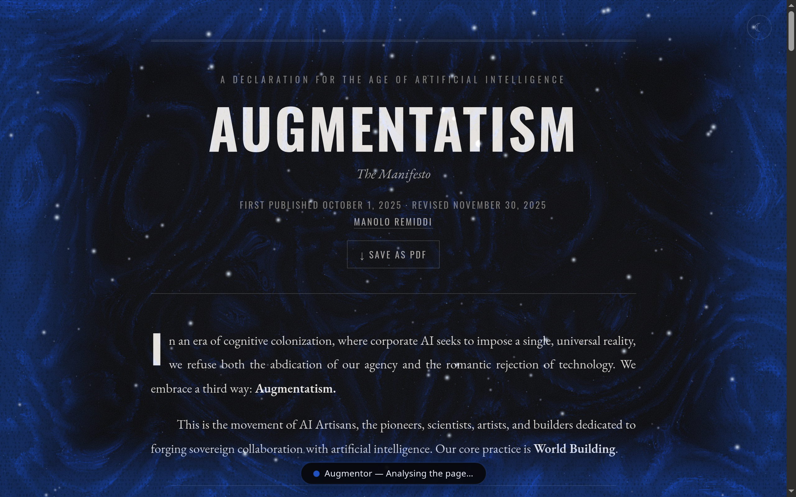

DeepSeek Harness plugin · Chromium extension
Give your DeepSeek Harness agent real browser hands.
Augmentor lets your agent do the web work for you: it opens pages, reads them, clicks, and types in your real Chromium browser — so you stop doing repetitive tasks by hand. It runs on the DSH you already have, and every action happens behind a frost veil you can watch.
Works in any Chromium-based browser · which one is yours?
- ✓It does the clicking and typing. Navigate, read, fill forms, extract, and step through multi-tab flows — in the tab you’re actually looking at, every single turn.
- ✓Your models, your call. Run it on a local llama.cpp model for privacy and free, or DeepSeek in the cloud — switch per conversation.
- ✓You can trust it. A frost veil sits over the tab it’s driving and tells you in plain words what it’s doing, then melts.

the real side panel · live in your browser
MODELS
Run it local. Run it cloud. Your call.
The panel’s model picker is the DSH catalog: the same $DSH_HOME/settings.yaml your app reads. Point Augmentor at a 27B on your own GPU or DeepSeek in the cloud, and switch per conversation. No per-route config, no restart.
Run it local
Use the models already running on your machine through llama.cpp. Private, offline, and as free as your own hardware. Augmentor reads your local routes straight from DSH settings. Nothing extra to wire up.
Run it cloud
Flip to the built-in DeepSeek route for frontier models. No local GPU required. The key resolves per request from your DSH credential store, the same one the app’s Models page writes.
IN ACTION
One prompt, one real tab.
Here’s a turn. On the left, the conversation; on the right, the frost veil on the very tab the agent is driving. You see every step in plain words.

HOW IT WORKS
Three little moving parts, one of them is yours.
The extension talks to your running DSH through the native-messaging host. The whole path stays on loopback and reuses the transport you already trust.
01 · EXTENSION
Chromium side panel
The chat UI, session + model picker, and the per-tab browser executor. It owns the frost veil and status pill.
02 · PROTOCOL PIPE
Native host
A small loopback Node process re-frames the port traffic as /api calls + downlink sockets. This is the only process Augmentor owns.
03 · YOUR DSH
The running installation
The dsh-augmentor plugin registers the five browser_* tools and its /api/augmentor handshake route. Everything else (model catalog, sessions, Stop) is stock DSH.
FEATURES
Built for the DSH user, not around them.
Everything below is stock DeepSeek Harness surfaced through the panel. No config you have to re-learn.
Local or cloud models
The picker is your DSH catalog: local llama.cpp routes and the built-in DeepSeek route, exactly as configured. Switch per conversation, no restart.
Real browser tools
browser_tabs_list, browser_navigate, browser_snapshot, browser_click, browser_type, registered in-process on the agent. No bash round-trip, no CLI, no relay.
DSH session parity
Conversations are real DSH sessions (session.create), shown in the app sidebar, live in both places. Ephemeral by default, one tap to Save to Augmentor Chat.
Stop works
Stock session.cancel aborts the live turn while preserving the pending inbox. No local DSH patch, no interrupt route to maintain.
Live streaming
Replies render as they’re generated. The panel coalesces deltas per animation frame with a blinking caret, mirroring the DSH web GUI.
Open in DSH
Jump from the panel straight into the running app with the right chat. Saved chats land in Augmentor Chat; the rest stay in Ungrouped, where housekeeping keeps them from piling up.
Tab-aware
Every turn starts on the tab you’re actually looking at, and stays there for the duration of the turn — so a multi-step sequence never hops under the agent’s feet.
Browse past chats
The sessions button lists your latest twenty Augmentor chats; click one and the full conversation re-renders, assistant prose and all.
THE FROST VEIL
You always see when it’s working.
Every tab the agent touches wears a visible marker. A WebGL frost sheet condenses in, breathes for the whole turn, and melts when the job is done. Move your mouse over it, and the light follows.
augmentatism.com
live WebGL demo · pointer moves the light · reduced-motion gets the static fallback
Condense → breathe → melt
The indicator appears the moment the agent takes control and only leaves before the answer. It lives for the whole turn, never fading mid-action.
Plain-language status
“Checking open tabs…”, “Clicking…”, “Typed into the search box”. Element text, never selectors. Machine errors get translated too.
Never blocks the page
Pointer-events pass through and the centre stays see-through, so you can keep reading while the agent works. No backdrop blur in the way.
WHAT IT’S FOR
Hand it a task. It drives your tab.
Whatever you’d do to a page by hand (navigate, read, click, type), your agent can do, on the model you point it at.
Fill out forms
“Log in and set these fields.” The agent types into the right boxes on the page you’re looking at, and you watch it happen.
Read & extract
“Summarise this page” or “grab the pricing table.” It snapshots real content, never inventing what isn’t there.
Multi-step flows
Search, open, compare, repeat. It keeps the conversation and your context across the whole flow, on one tab or several.
Watch & check
Point it at a page and ask it to check something. The veil stays up while it works, and melts when it reports back.
Your local stack
Run it entirely on a local model: private, offline, no API bill. Or hop to the cloud for a harder task.
Keep or toss it
Every chat is disposable by default. The one worth keeping? One tap files it into the Augmentor Chat workspace in DSH.
MEASURED, NOT MARKETED
Real Chromium, real numbers.
“count the principles of the Social Contract — which is the ‘ethical floor’? (two sentences max)” → prompt to idle in 17.5s on a local 27B model — 2 steps, 368 reply tokens, measured from the session store. A human needs the whole 3,500-word read.
YOUR BROWSER
Works where you already browse.
Augmentor ships as a standard Chromium extension — and most browsers out there are Chromium-based these days, whether you know it or not. If yours is, it works today. Firefox and Safari are on the way.
Any Chromium-based browser
Not sure if yours counts? Open your browser’s About page — if it says “Chromium” anywhere, you’re covered.
Firefox & Safari
Same plugin, same pipe — the extension is standard MV3, so the same codebase ships to both. No reinstall dance, no second account: your DSH stays the one and only runtime.
INSTALL
Up and running in about five minutes.
Two ways to install: do it by hand below, or copy one prompt and let your agent do it. If you already run DSH, you’re 90% of the way there.
0 · Install DeepSeek Harness — only if you don’t have it
Augmentor is a plugin for DeepSeek Harness (DSH), so DSH is the runtime you need first. Get it from github.com/deepseek-ai/deepseek-harness.
http://127.0.0.1:3080 and opens it in your browser. Once it’s up, come back and install Augmentor below.Run it from source instead: git clone https://github.com/deepseek-ai/deepseek-harness.git && cd deepseek-harness && pnpm install && pnpm run build && pnpm dsh web
A · The Chromium extension
chrome://extensions, turn on Developer mode.augmentor/extension/ folder.B · The DSH plugin
plugin/ package into your profile:dsh.bundle patch, so it joins the profile’s layer stack automatically. The app live-watches the stack and mounts the plugin without a restart.browser_* tools and its /api/augmentor handshake route — the thing the extension’s pipe talks to. Its GUI card shows connection status, endpoint, and the chat directory.OR · AUTOMATIC INSTALL
Let your agent install it for you.
Not in the mood to click around? Copy this prompt into the AI you already use — your DSH agent or any coding assistant. It installs DSH and Augmentor end-to-end and reports exactly what it did.
The extension id sits on the extension’s card in chrome://extensions — copy it from there. (Internal chrome:// pages are beyond the veil’s reach, so those clicks stay yours.)
FAQ
Good questions, straight answers.
Give your agent real hands.
If you already run DeepSeek Harness with local or cloud models, you’re minutes away from browser control you can actually see.
v0.1.25 · preview build · not yet on the store · load it unpacked from the repo.